曾经的日子里，我们通过电视去了解不同的人，更多样的文化，更大的世界。电视就是一座桥梁。你在电视的丰富内容中不断搜索，当你找到吸引你的内容时，你会全神贯注地沉浸其中。
但现在电视的状态有些啰嗦。你会看到一行又一行的内容，你在这些内容中迷茫地穿梭，为了寻找想要看的内容在其中花费了 5 分钟、10分钟、20分钟……这种体验很普遍，也很让人沮丧。我们会失去选择的能力而变得犹豫不决。
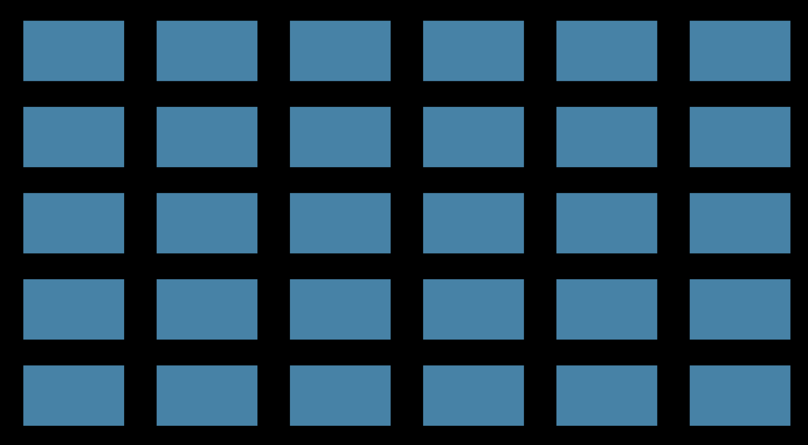
怎样让用户快速地找到他想要看的内容并且排除一切障碍进入呢？
目录
- 目录
- 内容优先 Content First
- Top Shelf 的新样式及使用要点
- Top Shelf Items 的构成
- User Profile 用户描述文件
- Tab Bar 标签栏
- Full Screen Browse 全屏浏览
- 参考链接
内容优先 Content First
Apple TV 的第一设计目标是「内容优先」。这意味着一定有东西正在呈现，一定有东西正在放映。当你运行一个 app 时，它应该是活的。
Top Shelf——移除障碍
首先，我们要移除进入 app 之前的障碍，摆脱内容和界面之间的障碍。这也正是我们要让 Top Shelf 变得可交互、更沉浸的原因。
当光标聚焦在「TV」app 上时，tvOS 默认会显示全屏的节目海报。当光标停留超过五秒后，这个节目的预告片就会开始播放。核心内容占据了屏幕上的每一个元素，充满了整个屏幕。这时，用户不会在没有预料到的情况下听到视频的声音。
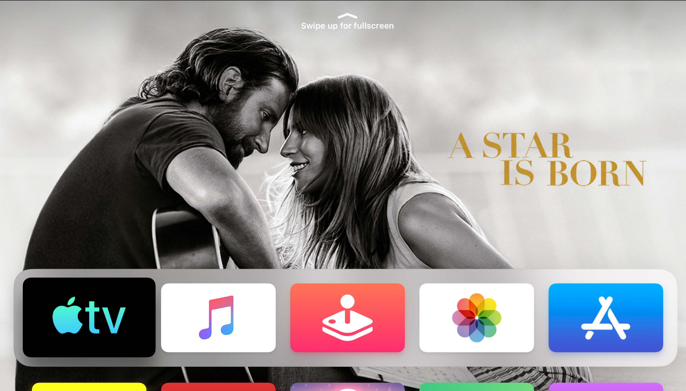
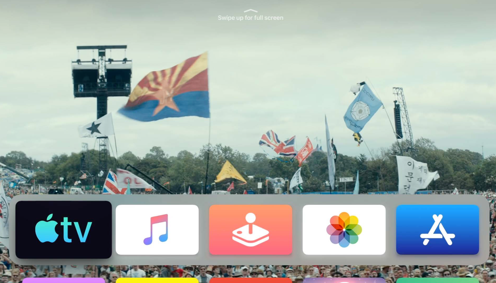
接下来我们要让用户看到的内容变得可交互。在 Top Shelf 中，屏幕顶部会有一个视觉提示，告诉用户可以通过向上移动光标进入全屏模式。当用户在遥控器上向上滑动后，dock 栏将会隐去，内容进入全屏模式。同时视频的标题可能会出现在屏幕上，用户也可以听到视频的声音。虽然仍然处于内容浏览模式中，但用户仿佛已经置身在电影之中。
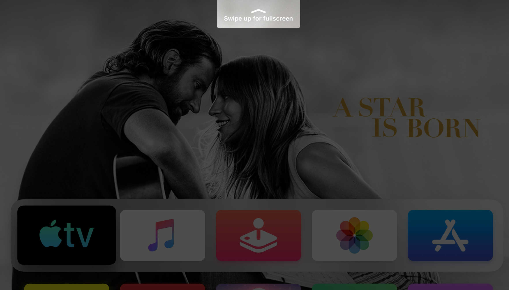
速度和节奏
速度和节奏也是减少用户认知负担的重要组成部分。尝试移除掉 app 中所有的延迟和滞后，这样一来，app 就会变得生动、流畅。
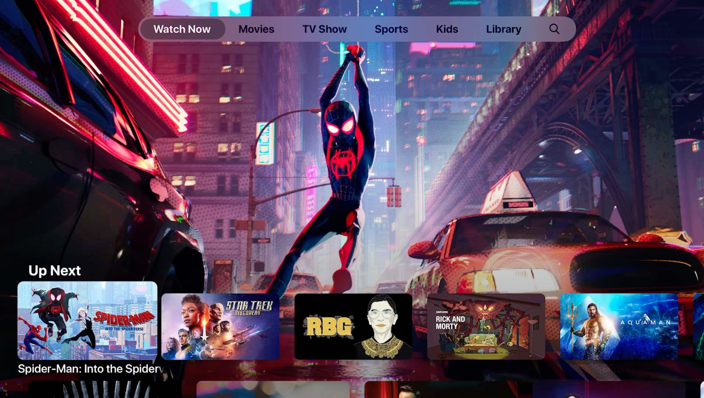
避免过度刺激
混乱的界面会让用户分心。想象一下在一个屋子里，同时有十几个人在和你讲话，你不能听清任何一个人所讲的内容。如果电视上的 app 也这样，用户就不能找到聚焦点。
如果使用了太多的动画、图标、图片、文本样式，就会与内容抢夺用户的注意力。我们需要让用户聚焦且放松。
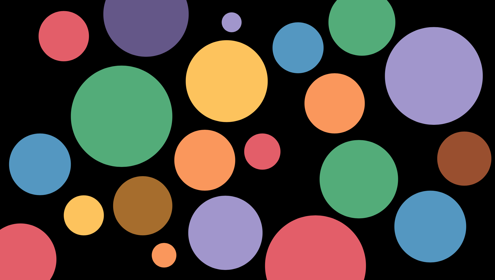
在 UI 中让内容类型多样化
在 UI 中让内容类型多样化实际上就是与不同的形状和比例打交道。在 Apple TV 上，屏幕被划分成不同大小的网格以来展示不同种类的内容。对于内容提供者来说，这些地方可以用来展示重要的、值得注意的有意义的内容。对于内容观看者来说，在浏览这些密集的内容时，这些不同类型的网格能让眼睛能够得到短暂的休息。
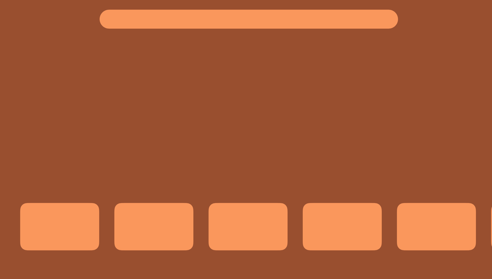
减少元素的数量
减少元素的数量意味着我们要创造层级。在 Top Shelf 的设计中，内容是最高优先级，所以它充满了整个屏幕，接着在屏幕底部放上了 app dock，在下面是其他的应用，这些的重要性要比内容低一些。通过给不同的元素划分优先级，你可以帮助用户导航、更好地引导用户。
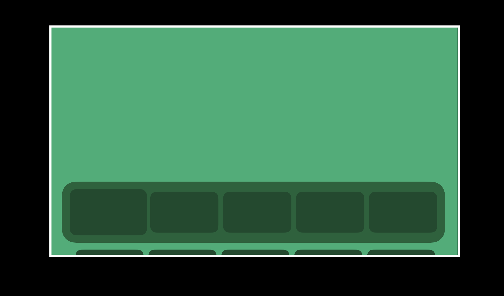
内容元数据
在 Top Shelf 中，内容的元数据是有用的，但是是次于内容考虑的事。因为我们要让用户首先被内容吸引，然后再去关注更多的可用信息。
Top Shelf 的内容进入全屏时，通过轻点遥控器就可以让内容元数据显示出来，这让用户有了控制权，进一步可以观看内容。这也让用户可以从浏览模式转到购买或订阅的操作中去。
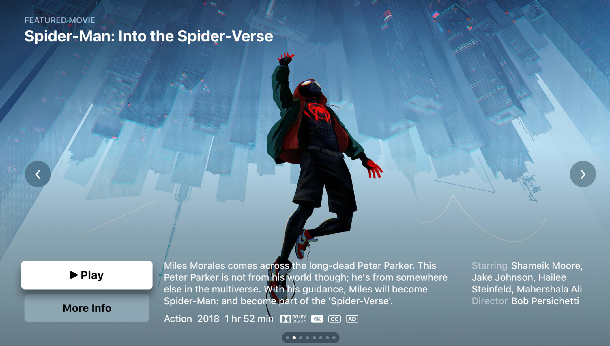
使用页码符号
页码符号会提醒用户他们正在浏览一系列内容中的一个，也表明他们正处于浏览模式而不是实际播放模式。就像面包屑一样，页码符号很小并且会出现在界面底部。我们使用了 Apple TV 的系统材料组件以让其与背景有良好的对比度。
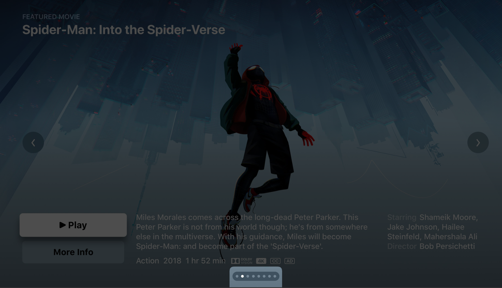
使用 V 形箭头
V 形箭头表明了滑动的方向，还表明了还有内容在屏幕之后。它和页码符号一起让用户保持空间感。
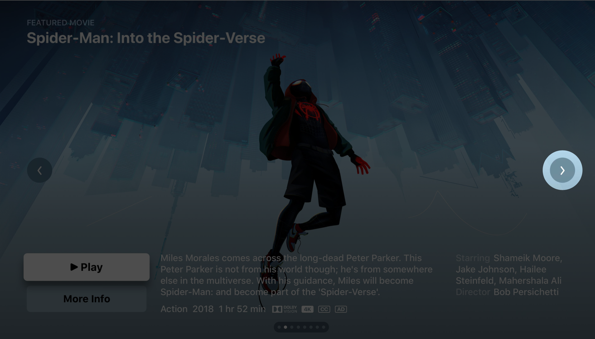
小结
这些注意点和小功能会避免用户在使用过程中陷入迷惑，避免让他们思考我该怎么导航出去，过一会儿我还能回来这个页面吗。这些地方会让用户沉浸在内容之中，我们也相信内容优先的力量。
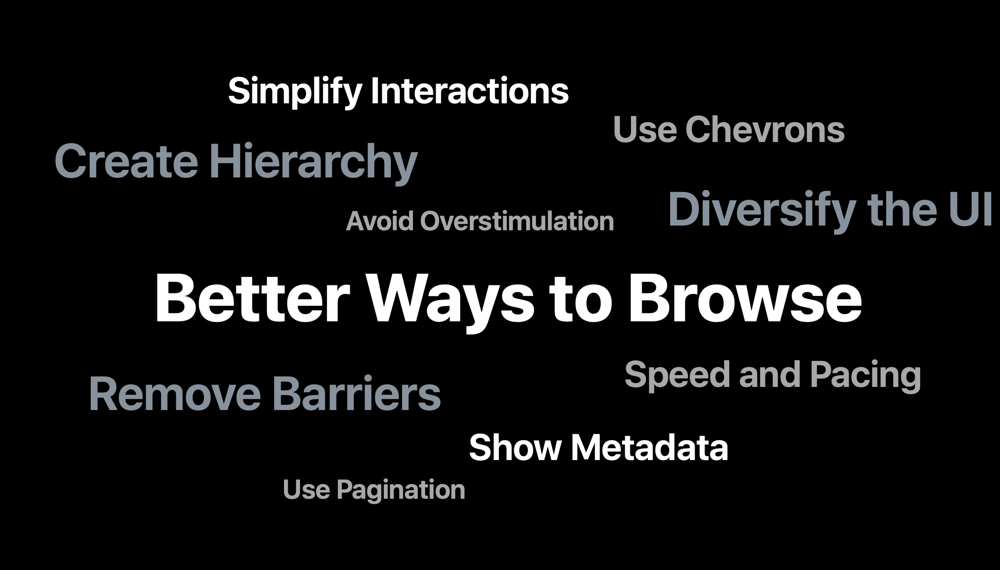
电视上的内容有能力改变我们的思维，有能力把我们带到一个新的世界，有能力打开我们的眼界，我们的工作就是让用户与这些能够改变他们的内容连接在一起，不要让用户困惑，帮助他们打开内容的大门，让用户进来，让内容发光。如果我们做到了，用户就会留下来沉浸在内容之中。这也会在用户和你的产品之间创造一种情感上的连接。
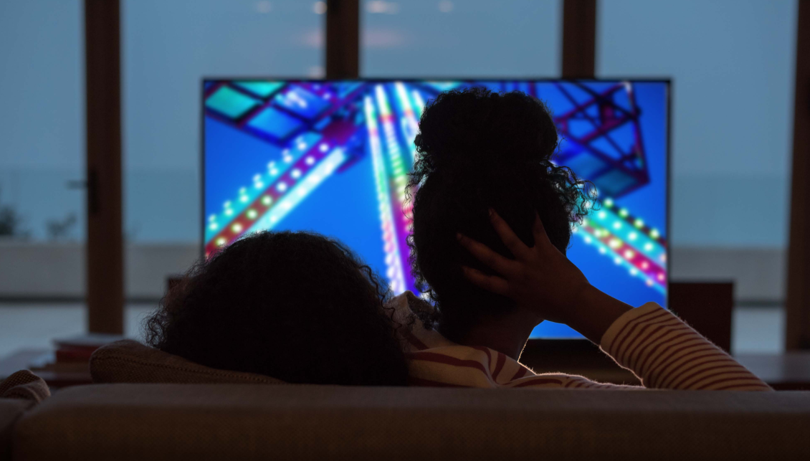
Top Shelf 的新样式及使用要点
Top Shelf 是让用户在进入 app 前就提前预览内容的好地方。已有的 Top Shelf 提供了两种样式，一种是「分组内容 Sectioned Content」，另一种是「插入内容 Inset Content」。
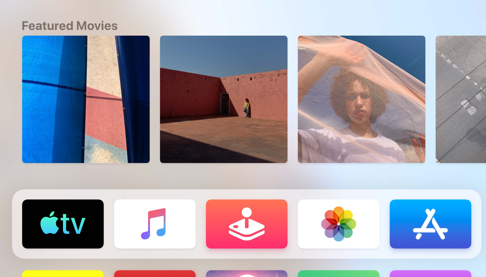
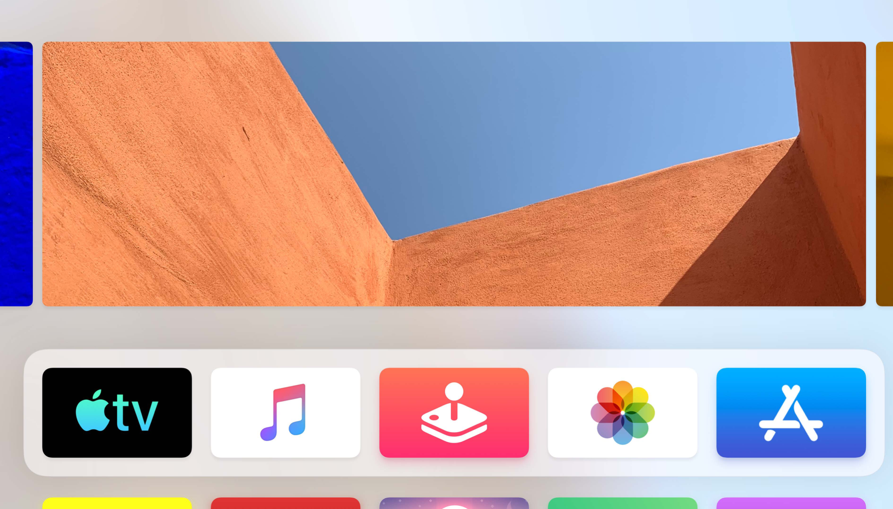
在 tvOS 13 中，提供了新的一种样式，称为「传送带内容 Carousel Content」。
Top Shelf Carousel（传送带/分页滚动视图）
当 Top Shelf 中的内容进入全屏时，Carousel 是可交互的。你可以在不同项目之间滑动就像是在浏览不同的频道。当你选中一个项目，你会在屏幕底部看到内容的丰富的元数据。这可以让你 app 中的某些内容直接展示在 Apple TV 的首屏上。当然并不是所有的内容都有一样的结构，所以在 API 中有两种内容样式提供给开发者，一种是 Action Carousel，一种是 Details Carousel。
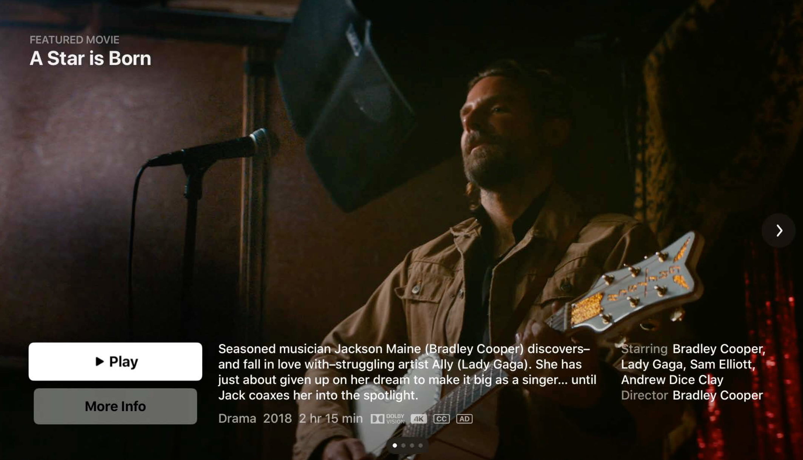
Actions Carousel
Actions Carousel 首先聚焦于你 app 提供的内容的全屏图片，并且有一部分 UI 元素你可以进行自定义。
在左上角有标题（title）和情景标题（context title），这可以告诉用户他们看到的是什么内容以及为什么要把这个内容展示给用户。你可以把情景标题想象成是一个部分的统称，它可以在 Top Shelf 的不同项目中创建逻辑分组。
在屏幕底部会有播放按钮和更多信息按钮，这为用户浏览指定的内容并直接进入 app 提供了一种确切的方式，用户可以选择直接播放或者查看更多信息。
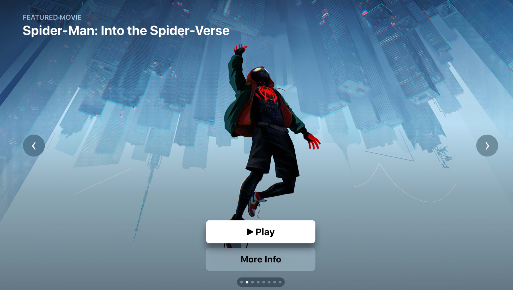
Details Carousel
在这种样式中有熟悉的标题部分以及动作按钮，并且 API 还允许你提供丰富的内容元数据以显示在这里。像下图这样，包括内容的简介、类型、年份、时长，还包括支持的音视频模式以及字幕和声音描述，以及演职员信息。
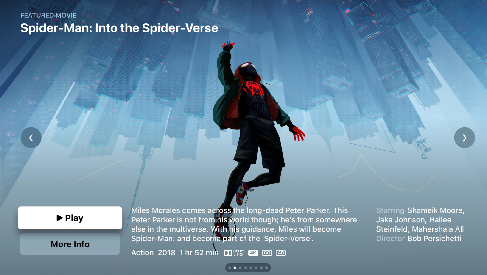
Content Best Practices
- Carousel 被用来作为发现内容的方式是最好的，比如说推荐的电影、电视剧的新剧集或者是已登录用户的个性化推荐。
- Top Shelf 中的内容应该被定期更新。这是通过展示亮点内容吸引用户进入 app 的窗口，所以需要保持新鲜和活力。
- 在 Top Shelf 中不要给用户太多选择，太多的项目会让用户迷失。推荐 5 到 10 个项目为佳。
Image Best Practices
- 在 Top Shelf 中的内容是全屏的，所以内容应该是 1920 × 1080pt 的，并且应该铺满全屏。对于 1080P 设备，API 会让你提供 1x 分辨率的，对于 4K 设备，API 会让你提供 2x 分辨率的。这些优化会让你的内容给用户提供最佳的体验。
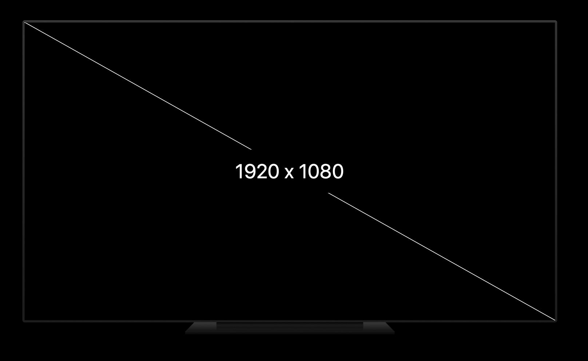
- tvOS 的安全区域像下图所示，左右有 90pt 的间距，上下有 60pt 的间距。注意如果内容可能会跑出安全区域是没有关系的，但要知道根据不同的设备或电视设置，用户可能看不到边缘的内容和控件。对于 Carousel 也有同样的安全区域定义，当你把图片放上去时，要记得会有一些系统元素会出现在上面，比如 V 形箭头、内容元数据信息等。所以如果图片上有重要的信息，要确保不会与这些系统元素冲突。
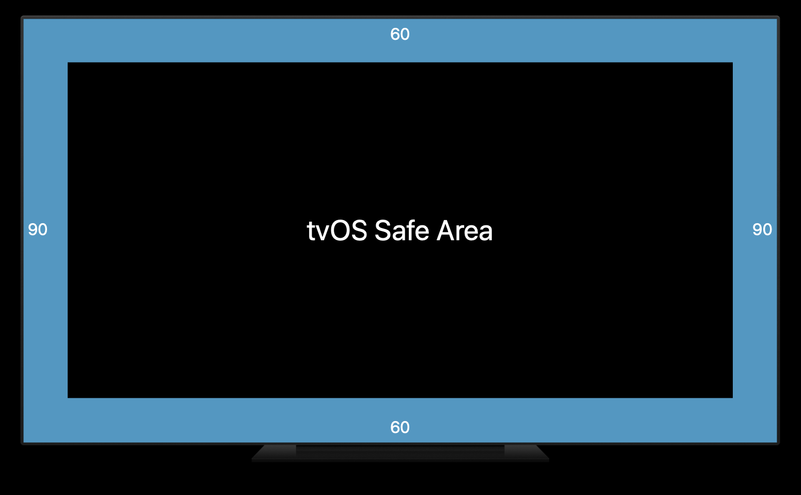
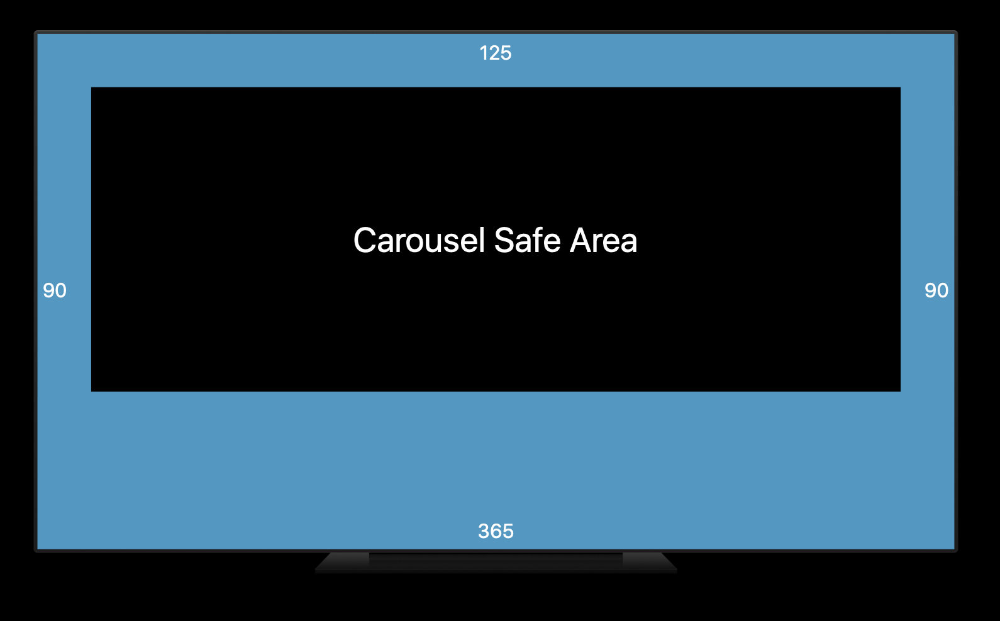
Video Best Practices
- 你可以在 Top Shelf 中播放视频、预告片等内容，这些视频应该是 1080p 高分辨率的。
- 你应该使用 HLS（HTTP Live Streaming）把视频传输给系统。这可以帮助改善内容，提供用户更好地体验。这些视频应该可以快速载入，可以根据用户的带宽调整分辨率。
- Carousel 是预览内容的好地方，所以不要在这提供过长的视频，推荐 2-5 分钟。
- 推荐在视频中包含声音。只有在用户作出确切动作的时候，电视才会发出声音。
Top Shelf Items 的构成
- TVTopShelfContentProvider 是 Top Shelf Extension 的源对象，当系统请求 Top Shelf 的数据时，它负责响应此请求。
- TVTopShelfContent 是一个你不会直接与其交互的协议，其包括三个具体的类，Carousel、Sectioned、Inset，每一种代表一种 UI 样式。每一个类都有其具体的属性。
- TVTopShelfItem 是每一个具备不同属性的内容样式的不同类。
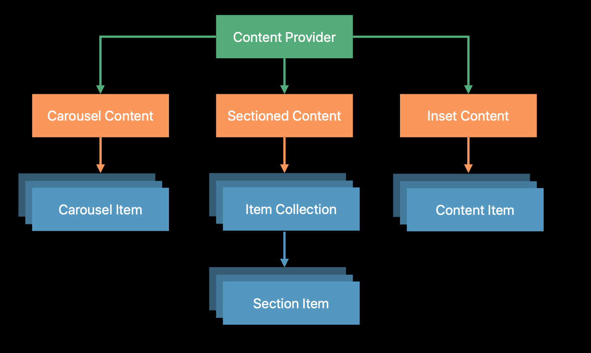
User Profile 用户描述文件
在 tvOS 13 中增加了控制中心，人们可以在这里快速访问一些常用功能，如睡眠、搜索、正在播放以及切换用户。通过这里的切换用户，人们可以在不离开当前情景的前提下，快速地切换到他们的个性化内容和推荐中。这个功能也开放给了开发者，所以开发者也可以利用这个多用户功能。
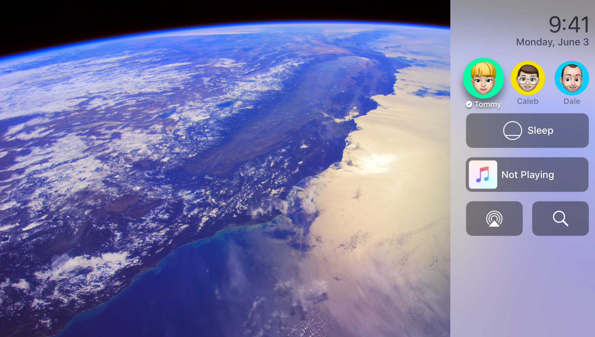
有多少 app 在一进入时就像下面一样让你选择用户，对于一个提供个性化体验的 app 来说，这样的功能不符合把内容放在第一位的使用体验。在 tvOS 13 中，你应该已经知道了是哪个用户在使用 app，而不需要再次询问用户。
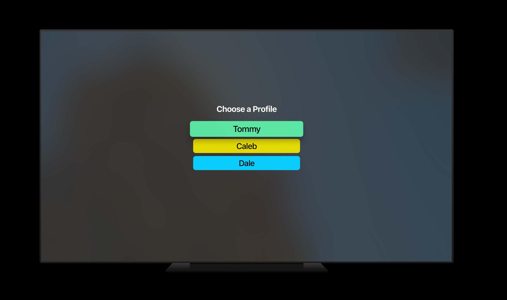
关于切换用户，系统提供了什么？
tvOS 13 的 API 提供了 TVUserManager，使用它可以帮助你的基于用户描述文件的 app 快速切换用户。
- 它提供了一个 identifier 用来代表当前的用户；
- 它会通知 app 什么时候用户的 identifier 发生了改变；
- 提供了一些系统 UI 把系统用户的 identifier 映射到 app 的多用户上。
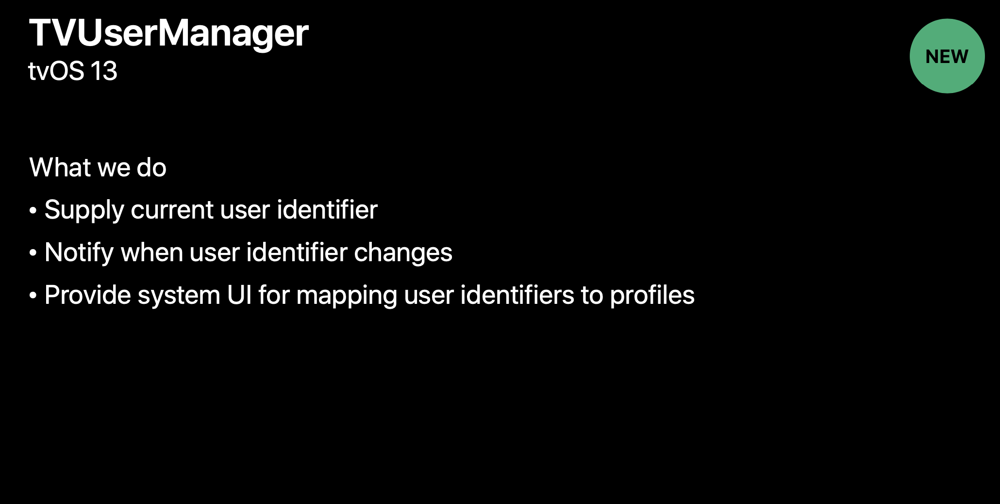
关于切换用户，开发者需要做什么？
以上是系统提供的功能，对于开发者来说，需要做的是：
- 存储用户的 identifier 并映射到 app 中的用户描述文件，存在多个用户 identifier 映射到一个用户描述文件的情况；identifier 对于不同的开发者账户是不一样的，如果你有多个 app，你可以共享相同的偏好设置。
- 监听当前用户 identifier 的改变；
- 在你 app 的路径中调起需要的系统 UI。
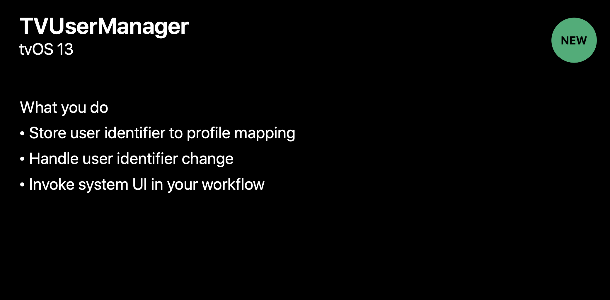
实例说明
以上面的进入 app 显示选择用户的界面为例，现在在进入这个页面之前，你需要检查 app 的描述文件是否已经映射到了当前系统的 identifier。
如果已经映射了，那无需再显示这个用户选择界面，直接进入相应的内容就好。
如果没有映射，你可以显示用户选择界面，当用户选择一个用户后你可以询问用户现在选择的用户是否可以映射到当前的 Apple TV 用户。如果用户选择确定映射，那你应该记住这个结果，下次进入 app 就不需要再选择用户了。你可以通过 API shouldStorePreferenceForCurrentUser 来实现。
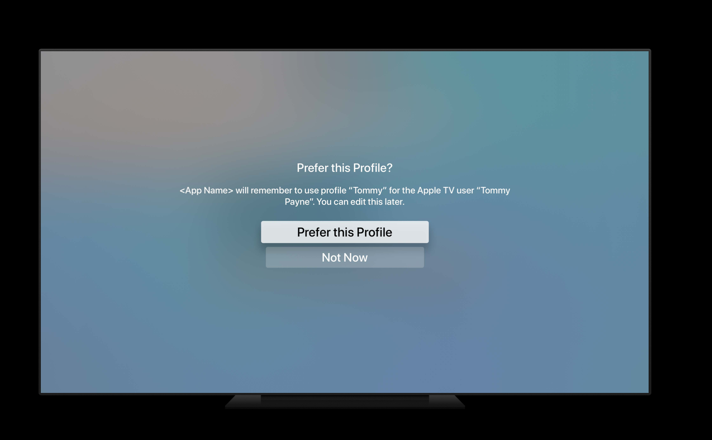
用户在之后也应该可以修改这个映射，你可以通过 API presentProfilePreferencePane 来实现。
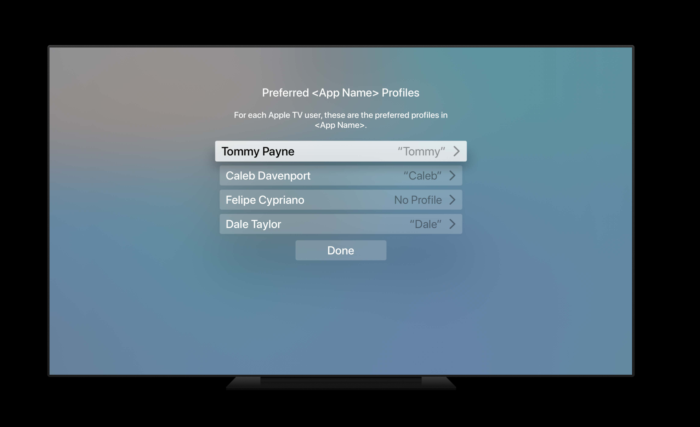
你需要监听当前用户 identifier 的改变。你可以通过API currentUserIdentifierDidChangeNotification 来实现。当改变发生时，你需要让系统知道新的系统用户映射到了当前的用户描述文件。
几条使用注意点：
- 在切换用户描述文件之前保存当前数据；
- 确保这种改变是清晰且有意义的，比如改变后个性化推荐发生了变化，应该有一个明显的过渡，告知用户已经切换了用户。
关于 User Profiles 的小结
- 如果你的 app 是有多个用户，依赖用户描述文件运行的，那利用好 tvOS 13 系统提供的多用户功能，让用户获得更好的个性化体验；
- 使用 TVUserManager 构建一个内容优先的体验，用户可以跳过那些不必要的对话框直接进入内容。
Tab Bar 标签栏
在 TV app 中引入了新的 tab bar，它让导航更加简单，也让背后的内容更加大放异彩。因为它可以跟随内容一起竖直滚动，而不是在失去焦点时就消失。这对强化用户的层级意识很有用。在 tvOS 13 中，每一个 app 都可以使用这种新的 tab bar 样式。
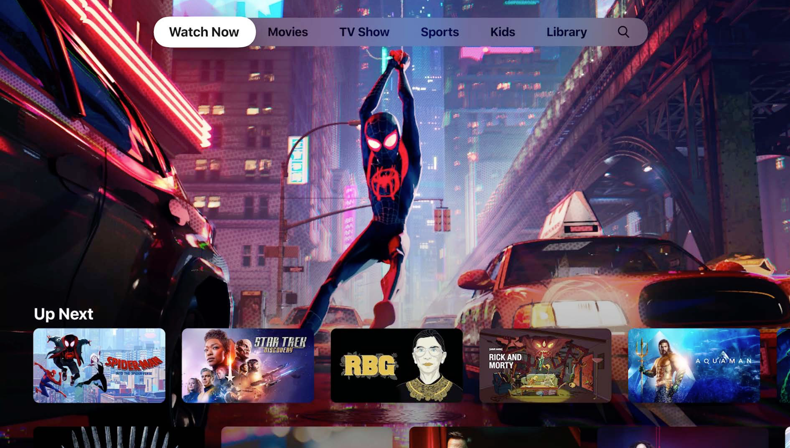
如果你想让 tab bar 与内容一起滚动，你可以在 view controller 中设置 tabBarObservedScrollView 属性，这样样式推荐用于一系列可浏览的内容，而且对于 UI Collection View Controller 这种样式是自动的。
如果你想 tab bar 固定在屏幕顶部，你可以让上面这个属性为 nil。
不管哪种情况，你都需要注意安全区域。
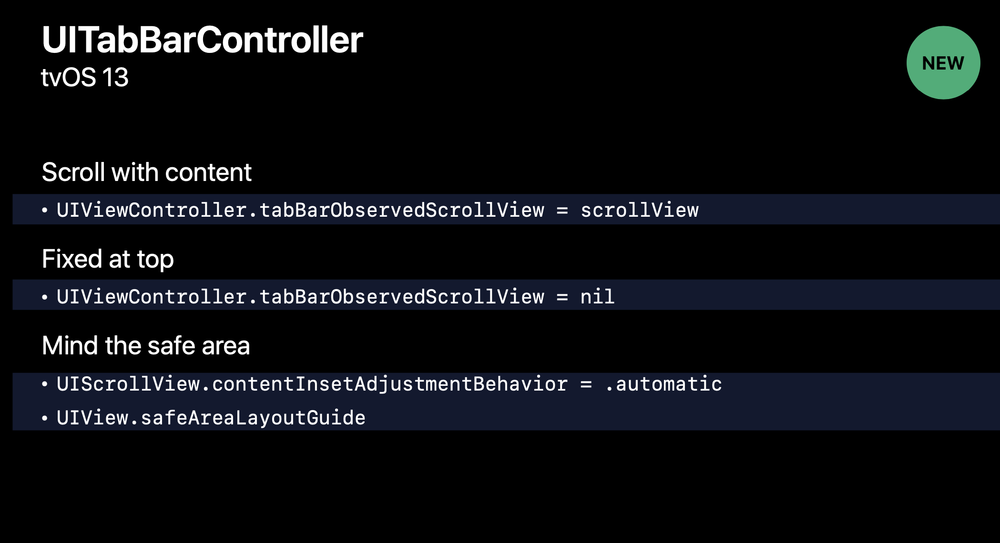
在 tab bar 中也引入了新的 API，你可以在其中展示你的品牌。你可以在 tab bar 的左右两边放置品牌 Logo。Logo 会与 tab bar 一起滚动。
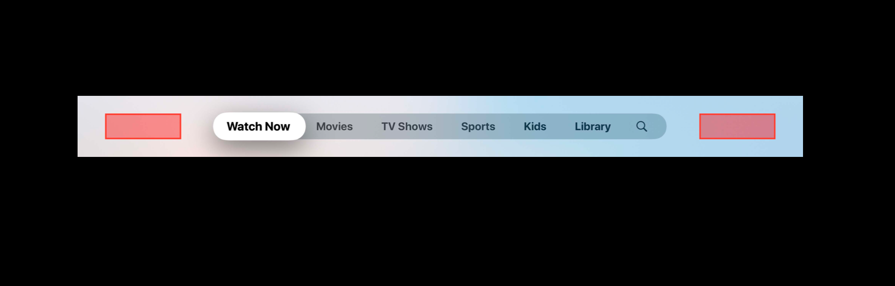
你可以通过下图中的两个属性来实现，同时你不应该把按钮等其他动态内容放在这里。如果你想进一步自定义 tab bar，你也可以通过下面的新属性来实现。
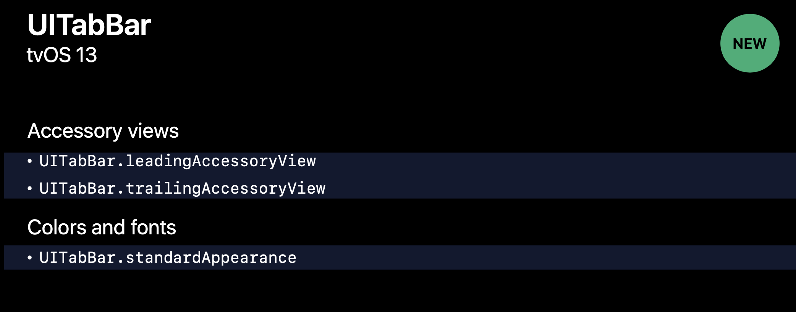
Full Screen Browse 全屏浏览
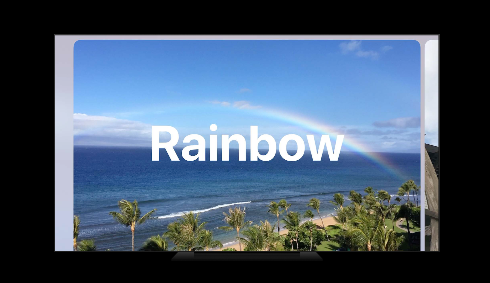
在 tvOS 13 系统的 API 中引入了「TVCollectionViewFullScreenCell」，它包括「Masked Background View」和「Masked Content View」两部分。你可以在前者上添加不透明的图片，可以在后者上添加 UI 元素。
因为新的 collection view layout 是为了利用好全屏幕而设计的，所以它的 cell 占据了整个屏幕。
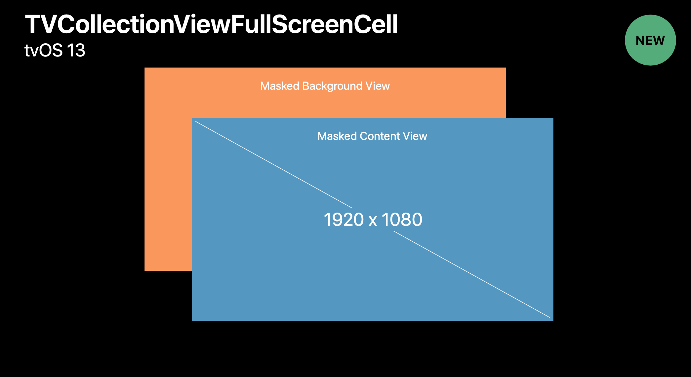
使用注意点：
- 在cell 移动到中心前不要开始动画或者播放视频；
- 注意屏外传入（offscreen passes）；
- 注意内存使用。
参考链接
- Profiles - System Capabilities - tvOS - Human Interface Guidelines - Apple Developer
- Top Shelf Content - Icons and Images - tvOS - Human Interface Guidelines - Apple Developer
- Tab Bars - Interface Elements - tvOS - Human Interface Guidelines - Apple Developer
- Mastering the Living Room With tvOS - WWDC 2019 - Videos - Apple Developer
如果你觉得这篇文章对你有所帮助，欢迎请我喝杯咖啡，感谢你的支持😁